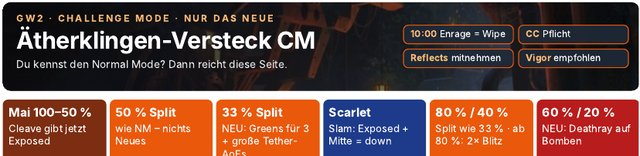
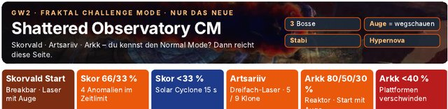
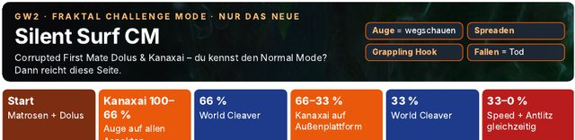

Guild Wars 2 · Guides
Fraktal-CM-Guides
Für alle, die den Normal Mode kennen und nur wissen wollen, was im Challenge Mode neu ist. Jeder Guide beginnt mit dem Wichtigsten auf einen Blick, danach kommen alle Mechaniken im Detail und Klassentipps.

Fraktal-CM
Ätherklingen-Versteck CM
Mai Trin · Echo of Scarlet Briar
Cleave gibt Exposed, im 33-%-Split Greens für drei Spieler, ab 60 % Deathray-Bomben mit Safe Spot.
- CC Pflicht
- 10:00 Enrage = Wipe
- Reflects mitnehmen
- Vigor empfohlen

Fraktal-CM
Nightmare CM
M.A.M.A. · Siax · Ensolyss
Breakbars bei allen drei Bossen, Siax-Veteranen N/O/S/W und Ensolyss' Bullet-Hell bis zum Schild bei 15 %.
- 3 Bosse
- CC Pflicht
- Stabi + Aegis
- /gg-Resets

Fraktal-CM
Shattered Observatory CM
Skorvald · Artsariiv · Arkk
Augen-Fear, Skorvalds Anomalien und Solar Cyclone, Arkks Reaktor und die wegbrechenden Plattformen.
- 3 Bosse
- Auge = wegschauen
- Stabi
- Hypernova

Fraktal-CM
Sunqua Peak CM
Ai, Keeper of the Peak
Härtere Lichtphase mit Meteor-Wellen, Reset per /gg, dann Fears, Sorrows und Guilt-Tether.
- Nur Endboss
- Cleanse
- CC für Sorrow
- /gg vor Dunkel

Fraktal-CM
Silent Surf CM
Dolus · Kanaxai
Dread Visage wegschauen, römische Zahlen verteilen und beim World Cleaver per Grappling Hook rüber.
- Auge = wegschauen
- Spreaden
- Fallen = Tod
- Grappling Hook

Fraktal-CM
Lonely Tower CM
Cerus & Deimos · Eparch
Eparchs Emotionen bleiben, Orbs nach Farben aufteilen, Rifts bei 65 % und 35 % mit Stall-Gruppe.
- Emotionen permanent
- Viel CC
- Stall-Spieler
- Stabi/Stealth

Fraktal-CM
Kinfall CM
Whispering Shadow
Frost Wisps klauen Life-Fire, Cryoflash tötet sofort, Spikes alle 0,5 s ab 80 %.
- Life-Fire halten
- CC für Wisps
- Stabi für Spikes
- Cryoflash = Tod
Mechaniken nach den Guides von Hardstuck, Klassendaten von GW2 Wingman.